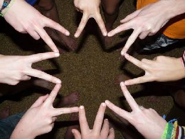
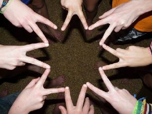

| Page 1 |
Coöperatief leren en
By Angela Wellink
NXT Generation
Eindhoven,
Nederland

“Binnen het FLL programma
zit voor ieder wat wils, voor
doeners, denkers, dromers en
beslissers.”


Coach’s Corner

FIRST® LEGO® League
Ik merk dat het geweldige FIRST® LEGO® League programma steeds vaker wordt ingezet op het basis-en
voorgezet onderwijs. Helaas valt het mij ook op dat dit ook meer en meer wordt ingezet als "makkelijk" en
snel te implementeren programma voor A+ kinderen, ofwel kinderen die een extra uitdaging nodig
hebben.
Dit vindt ik erg jammer. Want heeft niet elk kind een extra uitdaging nodig en is een team net als een klas
juist niet gebaat bij de diversiteit aan talenten?
Kinderen die moeite hebben met taal en rekenen krijgen vaak extra aandacht op deze gebieden en dat is
goed maar ze worden op die manier ook elke keer weer geconfronteerd met iets waar ze niet zo goed in
zijn. Soms vraagt deze extra aandacht voor taal en rekenen zoveel tijd dat deze kinderen worden buiten
gesloten van leerzame, leuke en uitdagende programma's zoals FLL®.
Coöperatief leren. Als FLL® coach heb ik gemerkt dat kinderen binnen een FLL® team juist heel veel
van de interactie met elkaar kunnen leren. De gedachte achter samenwerkend leren is dat zowel de
zwakke als de sterke kinderen hiervan leren.

Kinderen die sociaal niet zo sterk zijn leren assertiever te zijn en
kinderen die misschien niet zo goed zijn met taal blijken
geweldige robotbouwers te zijn die alles weten over lego of
fantastisch te kunnen presenteren. Kinderen die verlegen zijn
leren hun grenzen te verleggen en kinderen die het moeilijk
vinden om samen te werken merken dat wanneer je samen aan
iets werkt je veel meer kan bereiken.
Binnen het FLL® programma zit voor ieder wat wils, voor
doeners, denkers, dromers en beslissers. Ze hebben elkaar nodig,
ze vullen elkaar aan en leren met en van elkaars talenten, passie, moed, creativiteit en nieuwsgierigheid.
NXT Generation . Het team NXT generation was vele jaren zeer succesvol. Niet omdat er 10 bollebozen in
zaten maar 10 kinderen met dezelfde passie en moed. Ze hadden de moed om elkaar om hulp te vragen op
de gebieden waarin ze zelf minder goed in waren, ze durfde elkaar te verbeteren en elkaar te stimuleren.
Ze waren creatief en konden buiten de lijntjes denken omdat elk teamlid waardevol was op zijn/haar
eigen manier met zijn/haar eigen talenten. De
teamleden hadden geen (voor)oordeel, daarom

voelde iedereen zich veilig en welkom. Ze waren
nieuwsgierig naar alles wat er op hun pad kwam
en zo trots op wat ze keer op keer weer met
elkaar hadden bereikt.
FLL® is daarom in mijn ogen meer dan een A+
project of uitdaging voor slimme kinderen. Bij
FLL® mag je zijn wie je bent en iedereen
respecteert, waardeert en accepteert elkaar.
Leren doe je samen, FIRST® LEGO® League doe
 
je samen, daarbij sluit je niemand uit!